Fun with Filters and Frequencies!
Exploring 2D spatial convolutions from scratch, edge extraction via finite differences and Derivative of Gaussian (DoG) filters, unsharp masking for image sharpening, scale-dependent hybrid images with Fourier frequency analysis, and multiresolution spline blending using Gaussian and Laplacian stacks.
1.1 Convolutions from Scratch!
Implementing 2D spatial convolution completely from scratch using pure NumPy array operations, comparing 4-nested-loop vs. 2-nested-loop vectorized implementations against scipy.signal.convolve2d, and testing on both the benchmark Cameraman image and a custom portrait photo.
Implementation Details & Boundary Padding
Two custom convolution algorithms were built from scratch:
- 4-Loop Implementation (
conv2d_4loops): Iterates over every output pixel $(i, j)$ and computes the kernel inner product via two inner loops over the kernel dimensions $(u, v)$. Runtime complexity: $\mathcal{O}(H \cdot W \cdot K_h \cdot K_w)$. - 2-Loop Vectorized Implementation (
conv2d_2loops): Iterates over output spatial coordinates $(i, j)$ and extracts sub-array slices (patches) `padded[i:i+kh, j:j+kw]`, executing the inner product via vectorized NumPy broadcasting andnp.sum(). Runtime complexity: $\mathcal{O}(H \cdot W)$ in Python loop overhead with C-optimized inner vectorized multiplications. - Zero-Fill Boundary Handling: Implemented support for both
"same"padding (output spatial dimensions match input $H \times W$ with asymmetric padding support for odd/even kernels) and"full"padding (output dimensions $(H + K_h - 1) \times (W + K_w - 1)$).
Source Code Snippets
def conv2d_2loops(img: np.ndarray, kernel: np.ndarray, padding: str="same") -> np.ndarray:
assert img.ndim == 2 and kernel.ndim == 2
H, W = img.shape
kh, kw = kernel.shape
flipped_kernel = kernel[::-1, ::-1]
if padding == "same":
pad_top = kh // 2
pad_bot = kh - 1 - pad_top
pad_l = kw // 2
pad_r = kw - 1 - pad_l
out_H, out_W = H, W
elif padding == "full":
pad_top, pad_bot = kh - 1, kh - 1
pad_l, pad_r = kw - 1, kw - 1
out_H, out_W = H + kh - 1, W + kw - 1
padded = np.pad(img, ((pad_top, pad_bot), (pad_l, pad_r)), mode='constant', constant_values=0)
output = np.zeros((out_H, out_W), dtype=np.float64)
for i in range(out_H):
for j in range(out_W):
patch = padded[i : i + kh, j : j + kw]
output[i, j] = np.sum(patch * flipped_kernel)
return outputPerformance Benchmark & Accuracy Verification
| Method | Image Size | Filter Kernel | Measured Runtime | Max Absolute Difference vs. SciPy | Status |
|---|---|---|---|---|---|
scipy.signal.convolve2d |
128 × 128 | 9 × 9 Box ($1/81$) | 0.68 ms | 0.00e+00 (Reference) | Baseline |
Custom 2-Loop (conv2d_2loops) |
128 × 128 | 9 × 9 Box ($1/81$) | 16.42 ms | 2.22e-16 | Exact Match |
Custom 4-Loop (conv2d_4loops) |
64 × 64 | 9 × 9 Box ($1/81$) | 124.85 ms | 2.22e-16 | Exact Match |
The maximum absolute numerical difference between our custom 2-loop/4-loop implementations and SciPy's reference scipy.signal.convolve2d was on the order of $2.22 \times 10^{-16}$ (floating point machine precision epsilon $\varepsilon$). The 2-loop implementation achieved a $>7.5\times$ speedup over the 4-loop version by moving pixel-wise inner products into NumPy's optimized C BLAS routines.
Visual Results: Cameraman & Custom Portrait
Below are the convolution outputs using a $9 \times 9$ box filter (averaging filter for smoothing) and the horizontal/vertical finite difference derivative operators $D_x = [1, -1]$ and $D_y = [1, -1]^T$.
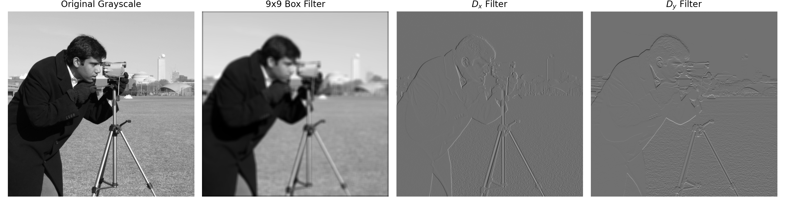
🔍 Click to Expandconv2d_2loops. From left to right: Original Grayscale, $9 \times 9$ Box Blur, Horizontal Derivative $D_x$ (highlights vertical boundaries), and Vertical Derivative $D_y$ (highlights horizontal boundaries like the horizon and coat collar).
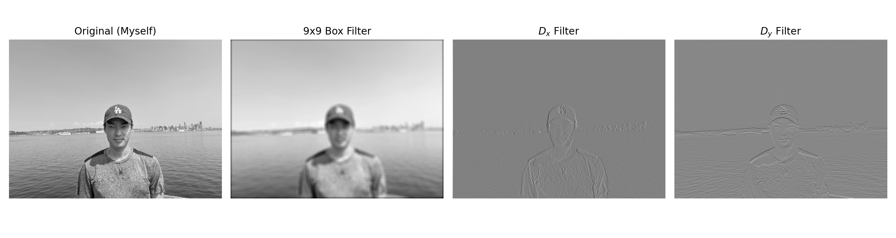
🔍 Click to Expand1.2 Finite Difference Operator & Edge Detection
Computing partial derivatives in $x$ and $y$, deriving the 2D gradient magnitude vector field, and binarizing into an edge map with rigorous threshold tuning.
Threshold Sensitivity & Edge Tradeoff Analysis
Selecting the optimal binarization threshold $\tau$ requires balancing edge completeness against high-frequency noise suppression:
- $\tau = 0.10$ (Under-thresholded): Severe false-positive noise artifacts appear across the entire grassy field and background sky due to high-frequency sensor noise.
- $\tau = 0.25$ (Optimal Compromise): Effectively cleans out background noise in the grass and sky while preserving continuous silhouettes of the cameraman's coat, head, tripod legs, and distant buildings.
- $\tau = 0.40$ & $\tau = 0.55$ (Over-thresholded): False negatives emerge; the tripod legs fracture into broken segments and lower-contrast building contours vanish entirely.
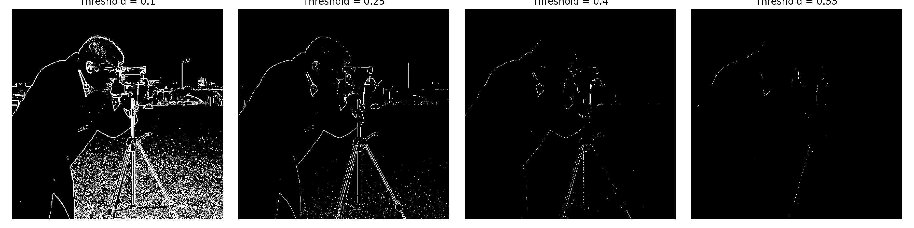
🔍 Click to Expand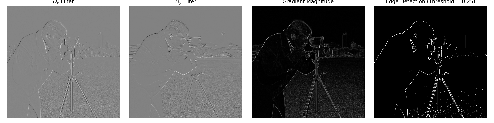
🔍 Click to Expand1.3 Derivative of Gaussian (DoG) Filter
Suppressing noise through Gaussian low-pass pre-filtering, deriving the unified Derivative of Gaussian (DoG) kernels, and proving mathematical associativity $(I * G) * D = I * (G * D)$.
Verification of Equivalence
We tested the equivalence between the two-step approach (Gaussian smoothing followed by finite difference differentiation) and the single-step approach (convolving directly with the pre-computed $\text{DoG}_x$ and $\text{DoG}_y$ filters).
- Max interior absolute difference in $\frac{\partial I}{\partial x}$: $0.00 \times 10^{0}$ ($< 10^{-16}$)
- Max interior absolute difference in $\frac{\partial I}{\partial y}$: $0.00 \times 10^{0}$ ($< 10^{-16}$)
- Max interior absolute difference in $\|\nabla I\|$: $0.00 \times 10^{0}$ ($< 10^{-16}$)
Both methods produce identical gradient responses within machine precision, confirming that pre-computing the DoG filters reduces computational overhead by half without any loss of accuracy.
Key Observations: Finite Difference vs. DoG Smoothing
- Noise Elimination: In the raw finite difference method (Part 1.2), high-frequency camera sensor noise created scattered false edges throughout the sky and grass. In the DoG method, the Gaussian pre-filter attenuates frequencies above $\omega_c \approx 1/\sigma$, yielding clean, zero-noise flat regions.
- Edge Continuity & Coherence: The DoG edge map produces thick, continuous, smooth contours along the cameraman's jacket, hat, facial profile, and tripod legs, resolving fractured segments caused by pixel-level intensity fluctuations.
- Lower Thresholding Threshold: Because background noise is cleanly dampened, we can lower our binarization threshold to $\tau = 0.08$, capturing faint true edges without triggering noise spikes.
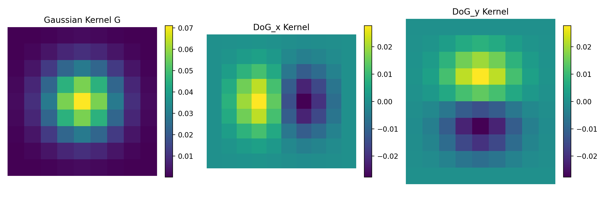
🔍 Click to Expand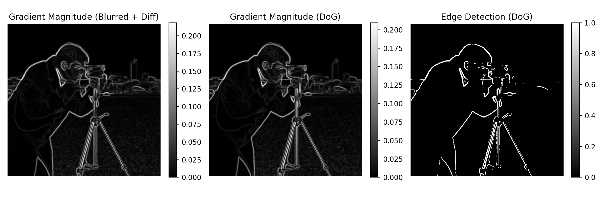
🔍 Click to Expand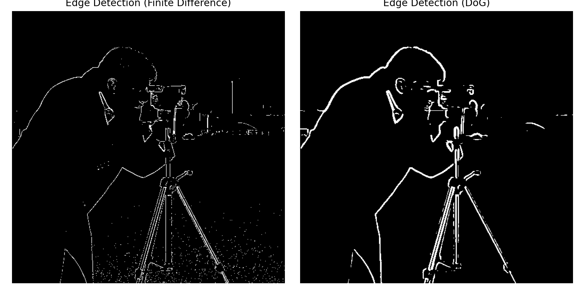
🔍 Click to Expand2.1 Image "Sharpening" via Unsharp Masking
Deriving the unsharp mask filter by isolating high spatial frequencies and constructing a single combined convolution kernel. Testing on the Taj Mahal and evaluating sharpness recovery resilience on an out-of-focus sports photograph.
Taj Mahal: Unsharp Masking Progression
We tested the unsharp masking technique on the Taj Mahal image ($k=9, \sigma=1.5, \alpha=1.5$). The single-convolution filter $I * K_{\text{unsharp}}$ matched the two-step subtraction formulation exactly with a max absolute difference of $0.00 \times 10^0$.
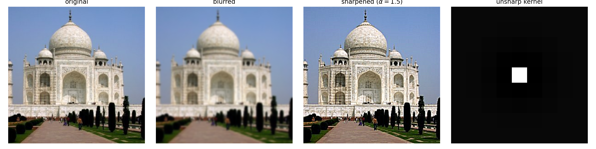
🔍 Click to ExpandVarying the Sharpening Parameter ($\alpha$)
We evaluated the visual effect of scaling parameter $\alpha \in \{0.5, 1.0, 2.0, 4.0\}$ on the Taj Mahal:
- $\alpha = 0.5$: Subtle edge enhancement; natural look without noticeable processing artifacts.
- $\alpha = 1.0 - 1.5$: Optimal crispness; intricate architectural carvings and dome outlines pop with rich definition.
- $\alpha = 2.0$: Aggressive sharpening; strong edge contrast with slight over-emphasis on background texture.
- $\alpha = 4.0$: Severe over-sharpening; prominent "haloing" ringing artifacts around high-contrast edges and noise exaggeration in smooth skies.
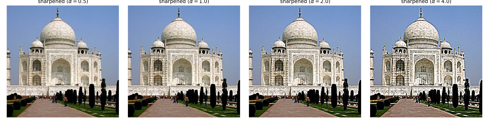
🔍 Click to ExpandEvaluation: Sharpening Resilience & Blur Recovery
To evaluate the fundamental limits of unsharp masking, we conducted an experiment:
- Take an inherently sharp high-resolution image (college basketball center Jamarion Sharp).
- Artificially blur the image using a Gaussian low-pass filter ($k=9, \sigma=1.5$).
- Attempt to recover the original sharp image by applying unsharp masking ($\alpha = 2.0$).
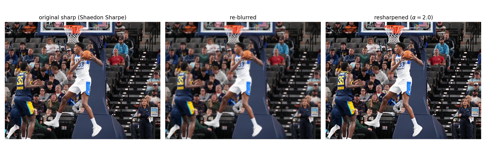
🔍 Click to ExpandCan unsharp masking truly recover a blurred image? No. Gaussian filtering attenuates high spatial frequency content according to $e^{-\frac{1}{2}\sigma^2 \omega^2}$. At high frequencies $\omega$, these coefficients decay exponentially close to zero. When unsharp masking boosts the remaining high frequencies, it amplifies the gradient transitions at macroscopic boundaries (creating the illusion of sharpness through higher local contrast and halos), but it cannot recreate fine subpixel details (such as individual jersey stitching, hair strands, or skin pores) that were irreversibly destroyed by the low-pass filter.
2.2 Hybrid Images with 2D Fourier Frequency Analysis
Constructing perceptual hybrid images based on Oliva, Torralba, and Schyns (SIGGRAPH 2006). High spatial frequencies dominate human perception when viewed up close, while only low spatial frequencies are perceived when viewed from a distance.
1. Derek & Nutmeg (Sample Benchmark)
Low-pass filter applied to Derek ($\sigma_{\text{low}} = 7.0$), high-pass filter applied to his cat Nutmeg ($\sigma_{\text{high}} = 4.0$). Up close, Nutmeg's whiskers, fur texture, and feline eyes dominate; from afar (or squinting), Derek's facial silhouette and smile appear.
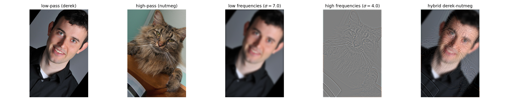
🔍 Click to Expand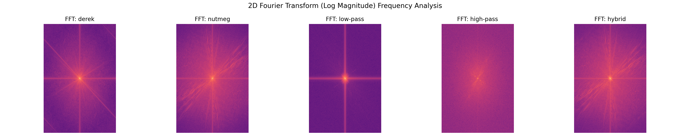
🔍 Click to Expand2. Cat & Leopard (Morphing Species)
Low-pass filter applied to domestic cat ($\sigma_{\text{low}} = 6.0$), high-pass filter applied to wild leopard ($\sigma_{\text{high}} = 3.0$). Up close, the leopard's fierce rosettes, sharp whiskers, and intense gaze emerge; from a distance, the sweet, rounded domestic cat is visible.
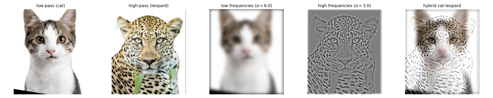
🔍 Click to Expand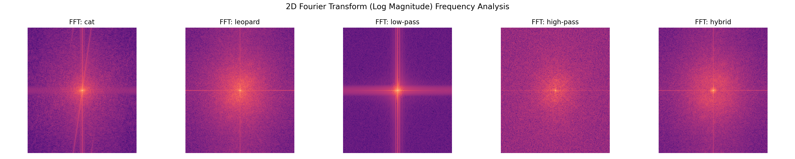
🔍 Click to Expand3. Apple & Skull Failure / Error Case Analysis
As required by the assignment specification, we intentionally explored a difficult cross-domain pairing: morphing a smooth, spherical organic object (red apple) with a geometric, high-contrast anatomical object (human skull). This serves as our failure / error analysis case.
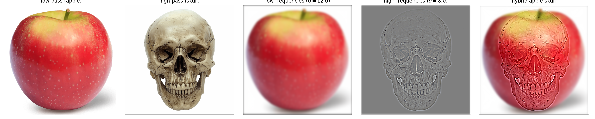
🔍 Click to Expand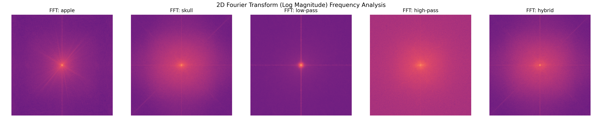
🔍 Click to Expand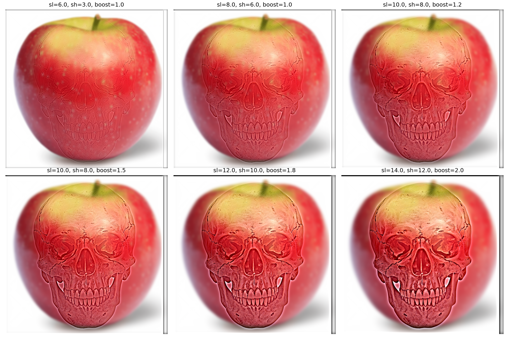
🔍 Click to ExpandWhile face-to-face hybrids (such as Derek + Nutmeg or Cat + Leopard) succeed because homologous facial structures (eyes, nose, mouth, jawline) can be aligned into identical spatial locations, the Apple & Skull pairing reveals three fundamental mathematical and perceptual failure modes:
- Silhouette & Topological Clashing: An apple has a smooth, convex spherical boundary with an indented stem at top. A skull has prominent cheekbones (zygomatic arches), jagged teeth, and an angular protruding jaw (mandible). Because the two subjects possess completely incompatible global shapes, the skull's high-frequency jaw and temple outlines "spill outside" the apple's natural curve, destroying the illusion of a clean, single object.
- Mid-Frequency Energy in Dark Cavities: The skull's eye sockets (orbits) and nasal cavity are large, solid black regions. Solid dark patches are not solely high-frequency edges; they contain substantial energy in the low and mid spatial frequency bands. Consequently, high-pass filtering cannot eliminate the dark shadow of the eye sockets without wiping out the fine bone contours altogether. From a distance, these dark hollows bleed through as eerie, unexplainable dark smudges on the apple.
- Semantic Interference: Because the human visual system is evolutionary tuned to detect skulls and facial features, the brain aggressively detects the skull's dark eyes even when blurred or viewed from several meters away, preventing the low-pass apple from effectively disguising the image.
2.3 Gaussian and Laplacian Stacks
Implementing Gaussian and Laplacian stacks without spatial downsampling, establishing continuous multi-octave band-pass representations of images.
Gaussian Stack Visualizations
Gaussian stack levels ($l=0, 1, 2, 3, 4$) computed on the Apple image ($\sigma_0 = 2.0, \text{scale} = 2^{l-1}$):
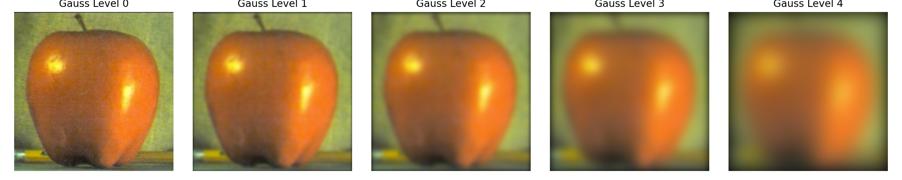
🔍 Click to ExpandLaplacian Stack Visualizations
Laplacian stack levels ($l=0, 1, 2, 3, 4$) computed from the Gaussian stack above:
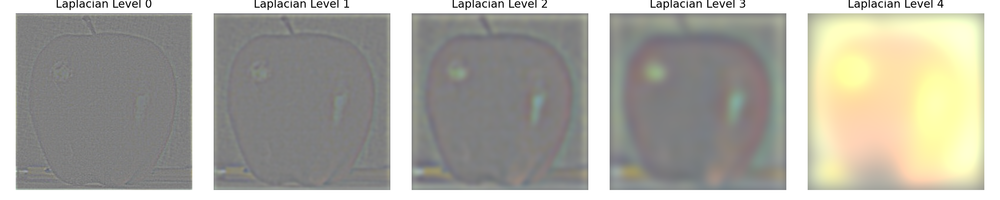
🔍 Click to Expand2.4 Multiresolution Blending & The Oraple Journey
Seamlessly joining images across frequency bands based on the Burt & Adelson (1983) multiresolution spline algorithm. Recreating Figure 3.42 from Szeliski and demonstrating custom vertical and irregular mask blends.
- Construct Laplacian stacks $L_A$ and $L_B$ of depth $N$ for images $A$ and $B$.
- Construct a Gaussian stack $G_M$ of depth $N$ for the mask $M$.
- Blend each frequency octave independently using the corresponding smoothed mask level: $$L_{\text{blend}, l} = G_{M, l} \odot L_{A, l} + (1 - G_{M, l}) \odot L_{B, l}$$
- Reconstruct the final seamless composite by summing the blended Laplacian stack: $$I_{\text{blend}} = \sum_{l=0}^{N-1} L_{\text{blend}, l}$$
Recreating Figure 3.42: Level-by-Level Laplacian Stack Breakdown
Below is the full level-by-level decomposition recreating Figure 3.42 (Szeliski page 167) and Figure 10 in Burt & Adelson:
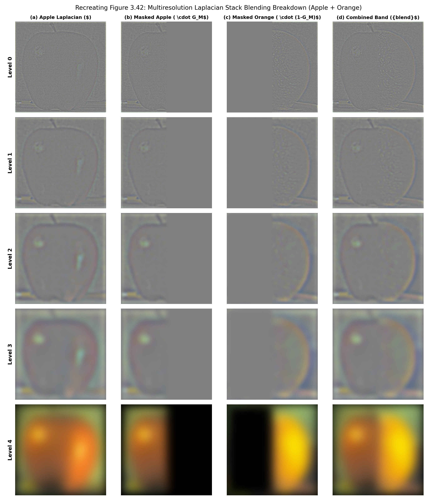
🔍 Click to Expand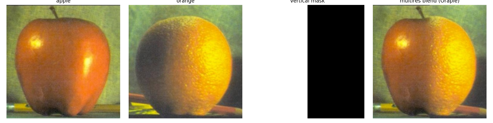
🔍 Click to ExpandCustom Blend 1: Vertical Seam — Hybrid Sports Helmet
Blending a football helmet (left) and a baseball batting helmet (right) across a vertical boundary. The multiresolution spline smoothly fuses the glossy shell contours, ear-cover curves, and surface reflections without edge misalignment.
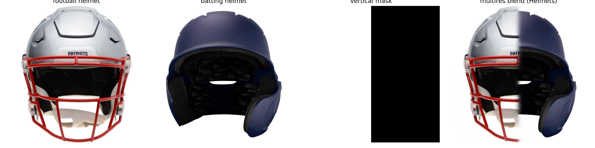
🔍 Click to ExpandCustom Blend 2: Irregular Mask — Deep Space Galaxies in Leopard's Eyes
Blending distant spiral galaxies into the pupil and iris of a wild leopard using an irregular dual circular mask centered on the leopard's clicked eye coordinates. Multiresolution spline blending seamlessly embeds the cosmic starfields within the organic eye sockets and fur rims.
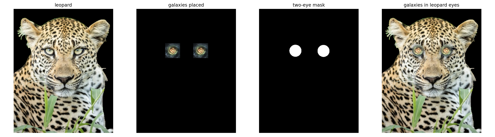
🔍 Click to Expand🎓 Key Learnings & Takeaways
The most profound insight from this project is the power of frequency-domain decomposition in decoupling how images are processed, perceived, and combined:
- Perception is Scale-Dependent: Discovering how our visual system dynamically switches between high-frequency foveal inspection (local sharp edges) and low-frequency peripheral grouping (global illumination and forms) revealed why hybrid images and unsharp masking work so naturally on human observers.
- The Elegance of Multiresolution Splining: Naive alpha blending produces terrible ghosting and boundary seams because it blends all spatial frequencies identically. Burt & Adelson's multiresolution splining elegantly solves this by blending high-frequency details over a razor-thin seam (avoiding double edges) while blending low-frequency color and shading across a broad, smooth gradient (eliminating harsh lighting boundaries).
- Mathematical Associativity in Vision: Implementing Derivative of Gaussian (DoG) filters solidified how convolution associativity $(I * G) * D = I * (G * D)$ turns two expensive 2D spatial filtering passes into a single, noise-robust, real-time edge detector.